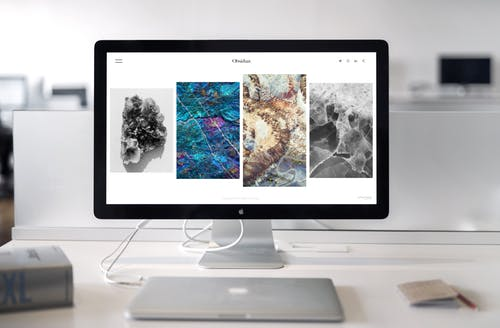
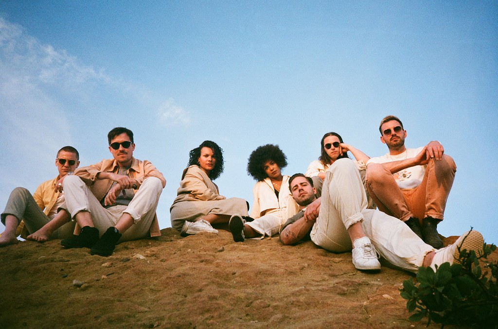

About Me
I'm a recent computer graduate from Boston University
Son of immigrants
Languages
Fluent in Haitian Creole, French writing and speaking
- Software: Unity3D, Microsoft Office, Microsoft SQL server, Apache Tomcat, Eclipse IDE
- Languages: C based languages Java, JS, Python, etc… HTML/CSS, XML/XSLT
- Operating Systems: Knowledge of Unix/Linux, Knowledge of Shell script

CS EXPERIENCE
Duck Creek Technologies Summer 2019
Field Engineer Intern
- Worked closely with client to meet their requirement and performance goals of the software.
- Work directly with Business Analysts to develop technical and functional requirements.
- Developed software platform through agile methodology
- Assist in the process of estimating the time and effort required to complete a deliverable
- Assist in the design, code, test, deploy and support JEE based solutions into industry-leading container/application server environments.
- Document code and participate in code reviews.
Project
Discrete-Event Simulator Fall 2018
- Built simulator to time a queuing system that accepts and processes 1000 requests to model a processing unit
- Developed a controller to manage different components of the processor through Object Oriented Programming
- Effectively increased the efficiency of the simulator allowing up to 10000 requests to be processed

Video Game Spring 2019
- Coded my resume as a video game
- Short 15 minutes game experience. Walk around the village and ask villagers about who I am.
- Keep track of it in your journal and by the end you will have my resume in your journal
Boston University
Bachelor of Arts in Computer Science
Class of 2020
Relevant coursework
- Intro to CS
- Intro to Web
- Fundamentals of Computeing systems
- Object oriented Devr